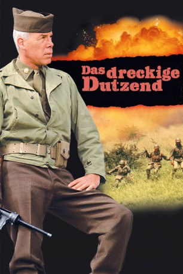
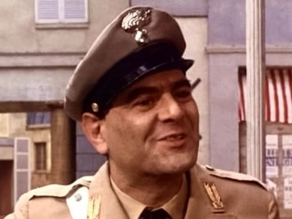
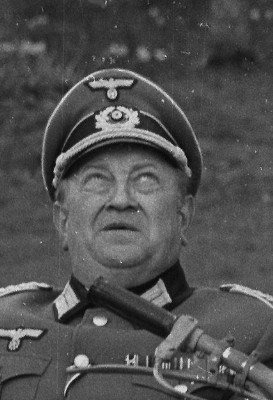
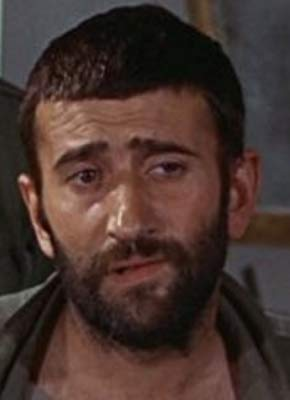

#1146 Das Dreckige Dutzend
Alternativ: The Dirty Dozen
Auszeichnungen: 1 Oscars gewonnen für 3 Oscars nominiert
 
 IMDB-Wertung: 7.8 / 10
IMDB-Wertung: 7.8 / 10  Metascore: 73
Metascore: 73 
März 1944: Major Reisman hat in seiner Vergangenheit nicht immer eine weiße Weste getragen, doch er liefert Ergebnisse. Und deswegen wird er auch mit einer besonders heiklen Mission beauftragt. Er soll ein Spezialkommando ausbilden, dass im feindlichen Gebiet eine Zusammenkunft von Nazigrößen sprengen soll, mehr oder weniger im wahrsten Sinne des Wortes. Für diesen Auftrag erhält der Abschaum der alliierten Streitkräfte eine zweite Chance. Die Männer, die wegen ihrer Grausamkeiten im Einsatz hinter Gittern sitzen und auf den Tod warten, können sich ein letztes Mal als echte Krieger und Patrioten beweisen. Doch natürlich sind die berüchtigten Soldaten alles andere als pflegeleicht. Aber im Drill wird aus dem dutzend Individualisten und Egoisten ein eingespieltes Team - und eine echte Einheit, die zu allem bereit ist!
Jahr: 1967
Dauer: 150 Minuten
FSK: 16
Land: England Studio: MGMTonspuren: DD5.1 - ,
Untertitel:
Auflösung: 1080p (1920x1080) Größe: 11673 MB
Genre: Action, Abenteuer, Krieg
Regisseur: Robert Aldrich
Drehbuch: Nunnally Johnson, Lukas Heller, E.M. Nathanson
Soundtrack: Frank De Vol
Darsteller:
 Lee Marvin als Maj. Reisman
Lee Marvin als Maj. Reisman Ernest Borgnine als Gen. Worden
Ernest Borgnine als Gen. Worden Charles Bronson als Joseph Wladislaw
Charles Bronson als Joseph Wladislaw Jim Brown als Robert Jefferson
Jim Brown als Robert Jefferson John Cassavetes als Victor Franko
John Cassavetes als Victor Franko Richard Jaeckel als Sgt. Bowren
Richard Jaeckel als Sgt. Bowren George Kennedy als Maj. Max Armbruster
George Kennedy als Maj. Max Armbruster- Ralph Meeker als Capt. Stuart Kinder
 Robert Ryan als Col. Everett Dasher Breed
Robert Ryan als Col. Everett Dasher Breed Telly Savalas als Archer Maggott
Telly Savalas als Archer Maggott Donald Sutherland als Vernon Pinkley
Donald Sutherland als Vernon Pinkley- Clint Walker als Samson Posey
 Robert Webber als Gen. Denton
Robert Webber als Gen. Denton- Stuart Cooper als Roscoe Lever
 Robert Phillips als Cpl. Morgan - MP Guard
Robert Phillips als Cpl. Morgan - MP Guard- George Roubicek als Pvt. Arthur James Gardner
- Michael Anthony als German Officer in Staff Car , uncredited
- Gerry Crampton als Clayton , uncredited
- Judith Furse als Drunken General's Wife , uncredited
-  Hal Galili als MP Master Sergeant / Hangman , uncredited
- Romo Gorrara als Airborne Soldier , uncredited
- Willoughby Gray als German Officer , uncredited
- Gerard Heinz als Card-Playing German Officer , uncredited
 John G. Heller als 2nd German Sentry at Chateau , uncredited
John G. Heller als 2nd German Sentry at Chateau , uncredited John Hollis als German Porter at Chateau , uncredited
John Hollis als German Porter at Chateau , uncredited- Alf Joint als German Sentry Wanting Light , uncredited
 Hildegard Knef als (uncredited
Hildegard Knef als (uncredited-  Richard Marner als German Sentry at Chateau , uncredited
 Dick Miller als MP at Hanging , uncredited
Dick Miller als MP at Hanging , uncredited- Michael Segal als Airborne Band Conductor , uncredited
- Warren Stanhope als German Officer , uncredited
- Trini López als Pedro Jiminez
- Tom Busby als Milo Vladek
- Ben Carruthers als Glenn Gilpin
- Colin Maitland als Seth Sawyer
-  Al Mancini als Tassos Bravos
- Thick Wilson als Gen. Worden's Aide
- Dora Reisser als German Officer's Girl
- Lewis Alexander als German Officer , uncredited
- Cynthia Bizeray als German Officer's Wife , uncredited
- Leo Britt als German General in Staff Car , uncredited
- Harry Brooks Jr. als German Officer , uncredited
- Alan Chuntz als French Servant , uncredited
- Harold Coyne als Solider , uncredited
- Hugh Elton als German Officer , uncredited
- Gary Files als Ambulance Driver , uncredited
- Alan Harris als Soldier , uncredited
- George Hilsdon als Medical Officer at Hanging , uncredited
 Juba Kennerley als German Officer , uncredited
Juba Kennerley als German Officer , uncredited- Eric Kent als Airborne Soldier , uncredited
Datei: X:\4-Tetralogie(A-K)\Dreckige Dutzend\Dreckige Dutzend 1, Das (1967, FSK16, 1920x1080).mkv seit 29.05.2015
Festplatte: HD Collection-3(N-Z)-6(A-Z)
 Es gibt insgesamt 7 Filme in der Gruppe '4-Tetralogie(A-K)\Dreckige Dutzend'
Es gibt insgesamt 7 Filme in der Gruppe '4-Tetralogie(A-K)\Dreckige Dutzend'